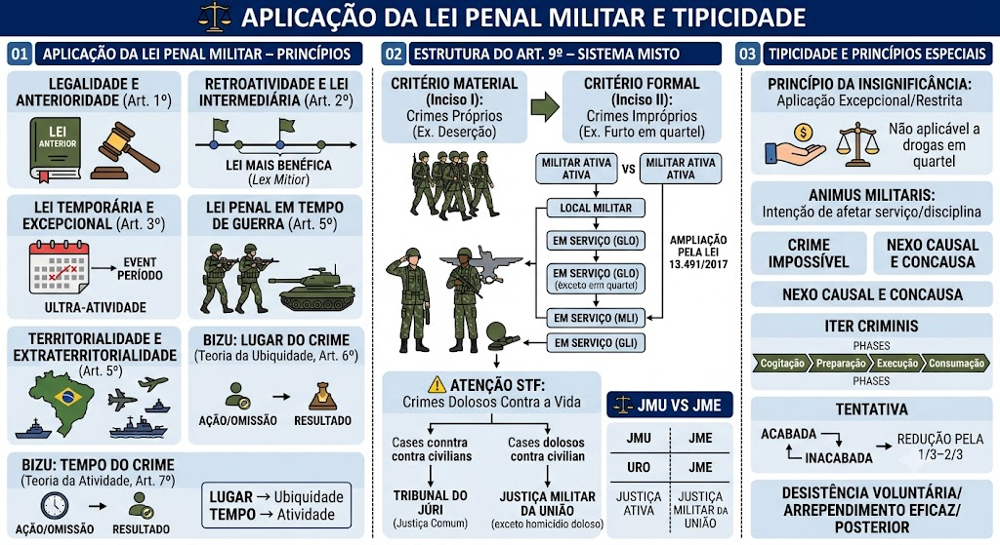

Material de estudo: Aplicação da Lei Penal e Tipicidade
Material complementar · Ver fonte no GitHub
Aplicação da Lei Penal Militar – Princípios
Legalidade e Anterioridade (Art. 1º)
Não há crime sem lei anterior que o defina, nem pena sem prévia cominação legal. No CPM, o princípio estende‑se expressamente às medidas de segurança.
Retroatividade e Lei Intermediária (Art. 2º)
A lei penal não retroage, salvo para beneficiar o réu (lex mitior). Se entre a data do crime e o julgamento surgir uma lei mais benéfica do que a vigente ao tempo do crime e do julgamento, aplica‑se essa lei intermediária (§ 1º).
Lei Temporária e Excepcional (Art. 3º)
Leis criadas para períodos específicos (ex.: lei da Copa, lei seca) ultra‑ativam‑se: mesmo após o término da vigência, continuam sendo aplicadas aos fatos ocorridos durante sua vigência, ainda que mais severas que a lei posterior.
Lei Penal em Tempo de Guerra
As penas são majoradas e condutas atípicas em tempo de paz tornam‑se crimes graves. Pode prever a pena de morte (Art. 5º, XLVII, “a” da CF), restrita ao tempo de guerra declarada.
Territorialidade e Extraterritorialidade (Art. 5º)
Territorialidade incondicionada: aplica‑se a lei penal militar a todo crime praticado em território nacional (solo, águas territoriais, espaço aéreo).
Extensão: navios e aeronaves militares brasileiros, onde quer que estejam, são considerados extensão do território nacional.
Extraterritorialidade condicionada (§ 2º): aplica‑se a crimes praticados em território estrangeiro, desde que o agente seja militar ou assemelhado e ingresse em território nacional (ou seja extraditado).
Lugar do Crime – Teoria da Ubiquidade (Art. 6º)
Considera‑se praticado o crime no local da ação ou omissão (no todo ou em parte) ou no local onde se produziu ou deveria produzir‑se o resultado. O juiz pode escolher qualquer um desses lugares para fixar a competência.
Tempo do Crime – Teoria da Atividade (Art. 7º)
O crime considera‑se praticado no momento da ação ou omissão, sendo irrelevante o momento do resultado.
Mnemônico:
- LUGAR → Ubiquidade (Art. 6º)
- TEMPO → Atividade (Art. 7º)
Estrutura do Art. 9º – Sistema Misto
Critério Material (Inciso I)
Crimes previstos exclusivamente no CPM – chamados de crimes próprios (ex.: deserção, insubmissão, violência contra superior). Protegem bens jurídicos exclusivamente militares (hierarquia, disciplina, serviço).
Critério Formal (Inciso II)
Crimes previstos no CPM ou na legislação comum (CP e leis extravagantes) que se tornam militares quando praticados por militar da ativa em determinadas condições:
alínea “a” – militar ativo contra militar ativo;
alínea “b” – em lugar sujeito à administração militar;
alínea “c” – em serviço (ainda que fora do quartel);
alínea “e” – em operações de Garantia da Lei e da Ordem (GLO).
Ampliação pela Lei 13.491/2017
Antes: só crimes do CPM. Depois: qualquer crime previsto em lei penal comum (CP ou leis especiais) pode ser crime militar, desde que enquadrado nas alíneas do inciso II.
Exemplos: abuso de autoridade, tortura, tráfico de drogas, porte ilegal de arma, crimes ambientais.
Delimitação do STF – Crimes Dolosos contra a Vida e o Tribunal do Júri
A Lei 13.491/2017 incluiu expressamente os crimes dolosos contra a vida no rol do Art. 9º, II, do CPM. Porém, o STF (ADI 5954 e 5957) fixou entendimento vinculante de que, embora a lei seja constitucional, a competência para julgar militares (inclusive em serviço) que cometem homicídio doloso contra civis é privativa do Tribunal do Júri (Art. 5º, XXXVIII, 'd', CF/88).
⚖️ Consequências práticas:
- A Justiça Militar não pode julgar o mérito do homicídio doloso nessas hipóteses, atuando apenas na fase inquisitorial (IPM) ou em crimes conexos que não sejam dolosos contra a vida.
- Essa divisão gera complexidades processuais (conexão, continência, separação de julgamentos) e debates sobre a autonomia do veredito do Júri em face da hierarquia militar – o que exige atenção redobrada em provas e concursos.
Competência – Justiça Militar da União x Estadual
| Situação | Justiça Competente |
|---|---|
| Forças Armadas | Justiça Militar da União |
| Polícias Militares e Bombeiros Militares | Justiça Militar Estadual |
| PM/BM – homicídio doloso contra civil | Tribunal do Júri (Justiça Comum) |
| Forças Armadas em GLO, sentinela ou missão presidencial | Justiça Militar da União (exceto homicídio doloso contra civil, que é do Júri) |
Crime Próprio vs. Impróprio
Próprio: só existe no CPM; em regra, só militar o pratica (exceção: insubmissão, civil convocado).
Impróprio: existe também no CP comum; torna‑se militar pelo contexto do Art. 9º; civil pode ser coautor ou partícipe.
Condições para a Militarização (Art. 9º, II)
Para que um crime previsto na legislação comum seja considerado crime militar (inciso II), é necessário que o agente seja militar da ativa e a conduta se enquadre em uma das seguintes situações:
- Em serviço ou em comissão de natureza militar – ainda que fora do quartel, a conduta praticada no exercício da função militar caracteriza crime militar.
- Em formatura, lugar sujeito à administração militar, ou contra superior hierárquico – a prática de crime em dependências militares ou contra autoridade militar configura crime militar.
- Em dia de folga, mas com uso de armas, facilidades ou prerrogativas inerentes à função militar – ainda que fora de serviço, se o militar se vale de sua condição para delinquir, o crime é militarizado.
- Contra militar da reserva, reformado ou civil, desde que no desempenho de função militar ou em dependências militares – a condição de vítima ou o local do fato determinam a militarização.
📌 Atenção: a Lei 13.491/2017 ampliou o rol, permitindo que qualquer crime comum seja militarizado se preenchidas essas condições. Contudo, o STF excepcionou os crimes dolosos contra a vida (competência do Tribunal do Júri).
Tipicidade e Princípios Especiais
Princípio da Insignificância no CPM
Aplicação excepcional e restrita. Pequenos furtos entre militares, por exemplo, ferem a confiança e a disciplina, inviabilizando a bagatela. STF/STJ não aplicam, em regra, a insignificância a crimes de posse de entorpecentes dentro de unidade militar.
Animus Militaris
Intenção de afetar o serviço, a disciplina ou a autoridade militar. Analisa‑se se a conduta atingiu os pilares das Forças Armadas (Art. 142 da CF).
Crime Impossível (Art. 17 do CP – aplicável)
Exclui a tipicidade quando o meio é absolutamente ineficaz ou o objeto é absolutamente impróprio. O fato é atípico (não há crime).
Nexo Causal e Concausa (Art. 13 do CP – aplicável)
Nexo causal: ligação entre conduta e resultado – indispensável para imputação.
Concausas absolutamente independentes: rompem o nexo; agente responde apenas por tentativa.
Concausas relativamente independentes: preexistentes (ex.: condição da vítima), concomitantes ou supervenientes. Se a superveniente, por si só, produz o resultado, exclui‑se a imputação do resultado final.
Teoria da equivalência (conditio sine qua non): causa é toda ação ou omissão sem a qual o resultado não teria ocorrido.
Imputação objetiva: além do nexo físico, exige‑se que a conduta tenha criado ou aumentado um risco juridicamente proibido e que esse risco se tenha concretizado.
Iter Criminis (fases do crime)
1. Cogitação (não punível) – subfases: idealização, deliberação, resolução.
2. Preparação (regra: não punível).
3. Execução – início da punibilidade.
4. Consumação – todos os elementos do tipo estão presentes.
Tentativa (Arts. 30 e 31 do CPM)
O agente inicia a execução, mas não consuma por circunstâncias alheias à sua vontade.
Acabada (perfeita): esgota todos os atos executórios.
Inacabada (imperfeita): não conclui os atos executórios.
Pena reduzida de 1/3 a 2/3 em relação ao crime consumado. No CPM, a tentativa é punível para todos os crimes, salvo raríssimas exceções; em casos de excepcional gravidade, o juiz pode aplicar a pena integral.
Desistência Voluntária e Arrependimento Eficaz (Art. 32 do CPM)
O agente interrompe voluntariamente a execução (desistência) ou, após executar, age para impedir o resultado (arrependimento eficaz). Responde apenas pelos atos já praticados (não pela tentativa).
Arrependimento Posterior (Art. 33 do CPM)
Aplicável apenas a crimes sem violência ou grave ameaça. O agente repara o dano ou restitui a coisa até o recebimento da denúncia. Redução de pena de 1/3 a 2/3.
Mapa-mental
